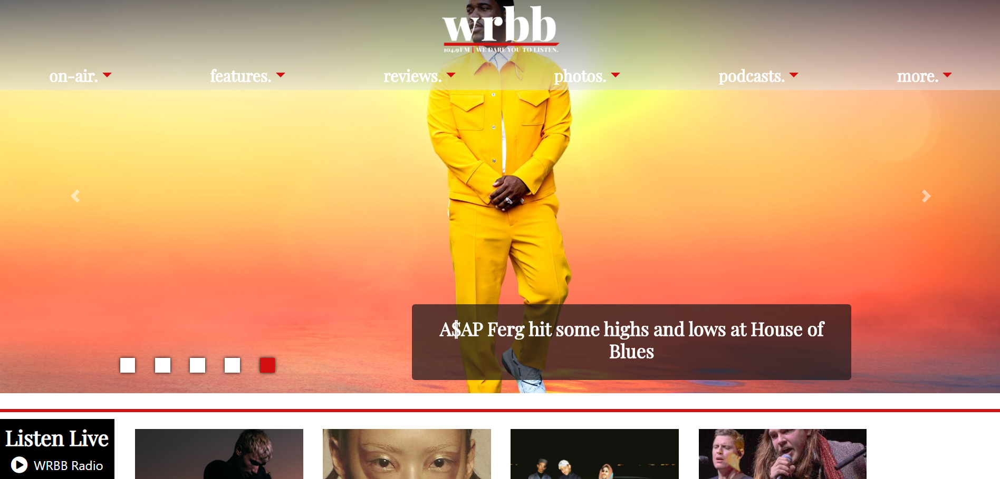

My most recent (and ongoing) project is the website redesign for WRBB, Northeastern's student-run radio station. As the station's webmaster, I run a small team of web developers implementing a new Wordpress theme for the site. We use PHP, SASS, and JQuery to write the code, MAMP and gulp to run our local environments, and GitHub to host the codebase, track progress, and do code reviews.
I've been working on it for four semesters, two as a developer and two as webmaster. It's been a long process, but I plan to have it finished before I graduate. A preview of the site is live at beta.wrbbradio.org if you want to check it out!
